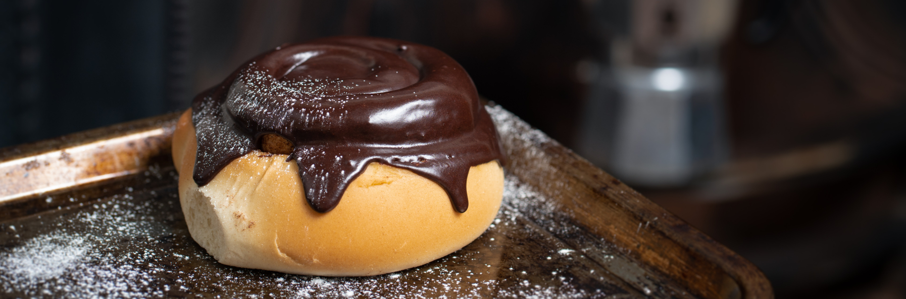

Snúður

You know those huge cinnamon buns almost completely covered in chocolate you’ve seen in Icelandic bakeries? These are it! We’ve no idea the origins of these nor when they came about in Iceland. They may be our invention or they might be Danish, like a lot of our baked goods, or British who introduced us to white flour. The only thing we know is that they are delicious and we ate them a lot in the nineties and early naughties as kids and teenagers. Always with chocolate milk. Always. This isn’t your healthy-nordic-whole-grain-not-that-tasteful buns, no no, this is a sugary, chocolatey, fluffy mess. And we love it. Enjoy.
Ingredients
Dough
- 300 ml of water
- 10 gr yeast
- 70 gr granulated Sugar
- 70 gr butter*
- 10 gr salt 300 gr flour
Filling
- 50gr softened butter (room temperature)
- 30gr granulated Sugar
- 10gr ground Cinnamon Glazing
- 75gr Icing sugar
- 30gr Cocoa powder (or to taste)
Add water slowly and mix thoroughly until you reach the desired consistency. Gelatin can be added – will help with creating a thicker layer of glazing. Alternatively you can make skip the Cocoa powder and add lemon juice instead (and a touch of food colouring). Or perhaps create a butterscotch glaze.
Steps
- Take out your butter to soften it
- Prepare your yeast by adding the sugar and yeast to lukewarm water (37c or 98F) and set aside while it blooms.
- Combine and sieve all the dry ingredients, then add the yeast and melted spreadable. Take care it isn’t hotter than lukewarm so that you don’t stunt the yeast.
- Mix and knead. Should feel similar to pizza dough
- Roll out the dough into a rectangle, just about 1 cm thick.
- And spread the filling all over the inside. Except for the very ends where you’ll finish rolling it up
- Cut it into about a 2 ½ cm (1 in) long pieces or about 2 finger width – it should be enough for about 6-8 cinnamon rolls
- You can leave them to rise in a warm room, but we’ve turned to an old classic.
- Put them into an oven with the oven light on and place a tin with boiling water inside; the steam will help it rise.
- When the cinnamon rolls are about twice the size they are ready for baking.
- Preheat the over to 210°(410F) Fan-assisted and bake for 6-7 min or until golden.
- Once ready, let them cool, add icing and enjoy!
Credit